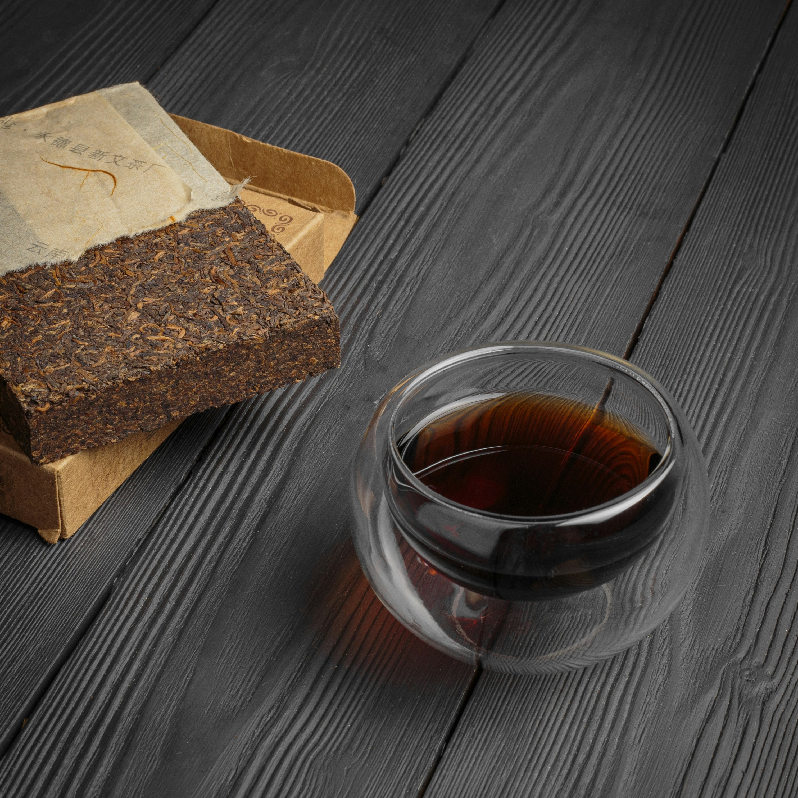
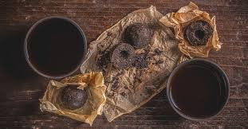
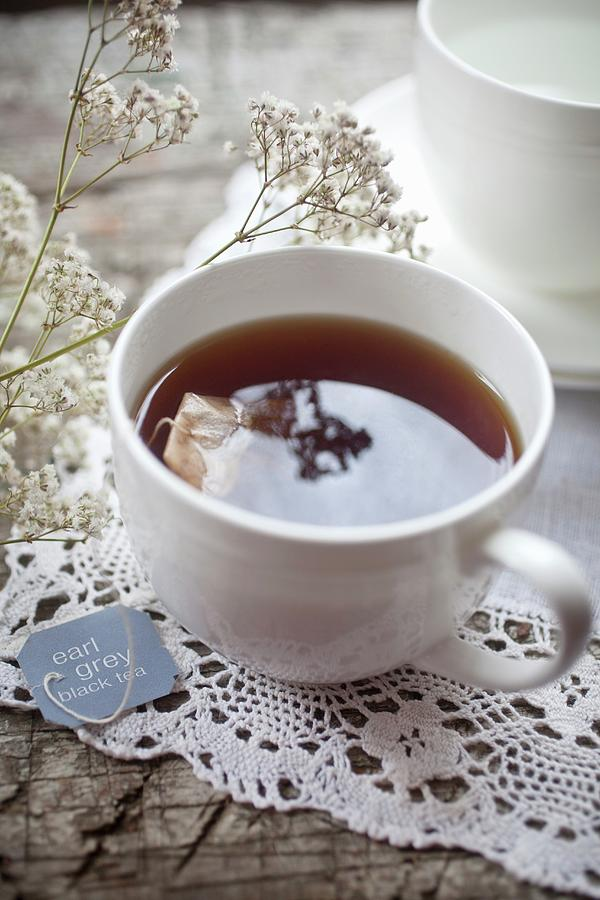
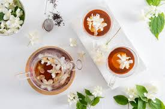
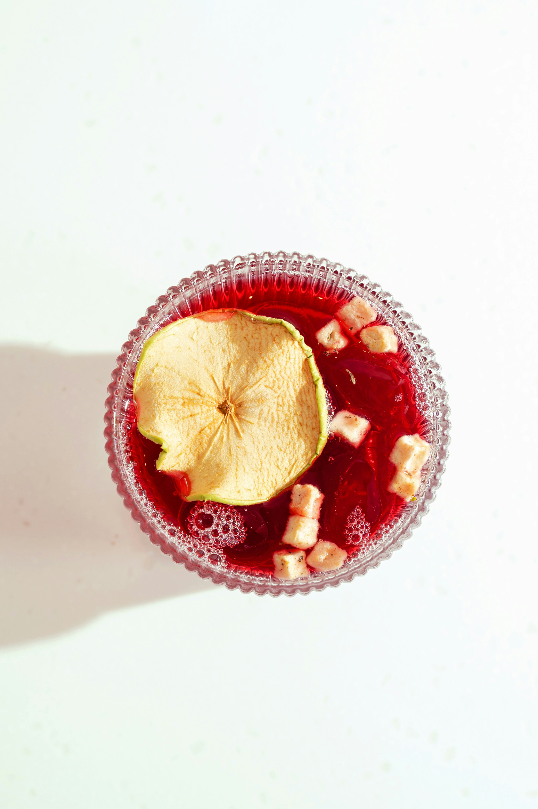

Different Types of Tea
Basic Varieties
All tea comes from only one plant called Camellia sinensis. However, based on the type of tea leaves picked and the level of oxidation or processing, tea is classified into five main types: Black, Green, Oolong, White, and Pu-erh.

Black Tea
Black Tea is the most common type of tea accounting for up to 85% of total tea consumption in the western world.
Black tea is fully oxidized and has a darker appearance, stronger flavour, and higher caffeine content compared to other teas.
The caffeine content in black tea is still around half the level of coffee.
Often black teas can be consumed with sugar, milk, or lemon and offer some of the same health benefits as other teas.

Green Tea
Green Tea is 'unoxidized' tea.
The leaves are heated soon after picking in order to destroy the enzymes that cause oxidation.
This type of processing preserves a high level of antioxidants, vitamins, and minerals accounting for the various health benefits of green tea.
The infusion is pale greenish-yellow in color and tastes light and grassy.
It is best consumed without any additives, although some people may prefer to add lemon or a sweetener but not milk.

Oolong Tea
Oolong Tea is semi-oxidized, so the leaf is allowed to sit for maybe 2-4 hours, before being heated up to halt oxidization.
The amount of oxidation affects the flavour and appearance of the tea.
Longer oxidization results in a darker oolong which is more similar in taste to a black tea, while shorter oxidization makes it more similar in nature to green tea.
When steeped, Oolong tea produces golden or light brown tea with a very delicate flavour resembling neither black nor green tea.

White Tea
White Tea is the least processed of all teas.
Only the unopened buds and young leaves covered in silver fuzz are used, and they are merely withered and dried.
White tea produces a very light-colored infusion with a mild flavour.
Its caffeine content is even lower than that of green tea and is considered to have a very high level of antioxidants.
White tea is best consumed without any additives at all.

Pu-erh Tea
Pu-erh tea is a special type of tea that comes from the Yunan province of China and is known for its earthy flavour.
It is made out of tea plucked from wild tea trees rather than cultivated bushes and the leaves go through microbial fermentation by pressing the raw leaves together and then storing them for maturity.
Pu-erh tea can be either black or green depending on the level of oxidation allowed in the process.
Flavoured Tea
Flavoured teas are created by adding flowers, herbs, fruits, and other natural flavours to black, green, or oolong teas. Some of the more common types of flavoured teas include:

Earl Grey
Earl Grey is the most popular flavoured tea in Britain.
It is usually prepared by adding an extract of bergamot, a citrus fruit to black tea (although we have now developed a version with green tea too).
It was created in the 1800s to mask the flavour of cheap tea and to pass it off as high quality tea.
Although many supermarket shelves are still filled with cheaper varieties, it is now possible to buy premium Earl Grey which has been created by infusing the finest blend of black tea with the best Italian bergamot.

Jasmine Tea
Jasmine Tea is tea infused with the aroma of jasmine blossoms.
It is the most popular scented tea in China. It is usually made with green tea, but white, oolong, and black teas are also used.
The method of infusing the scent of jasmine flowers into the tea is very laborious and takes several days.
The tea is stored with the flowers in a special room with controlled humidity.
This is done at night as that is when the jasmine flowers bloom.
The process is repeated over several nights to get the right level of scent.

Masala Chai
Masala Chai is black tea mixed with traditional Indian spices like cardamom, cloves, cinnamon, and ginger.
It is usually prepared by boiling water and milk along with tea and spices and sweetened with sugar.
It is the most popular way of drinking tea in India.
However, this wasn't always the case. When tea was first grown in India, it was not a popular beverage among the locals.
Hence some Indian vendors began adding it to a local drink called 'kadha' which was water and milk boiled with spices.
This is how Masala chai or Chai tea as it is known in Britain was born!
Herbal Infusions (Tisanes)
Herbal infusions from other plants are also sometimes referred to as tea, although not to purists. Examples include chamomile, peppermint, and rooibos.

Fruit Teas or Infusions
Fruit Teas or Infusions are made from natural unprocessed fruits.
They are naturally sweet but do not have the overpowering sweetness of sugar.
Fruit teas are high in antioxidants and vitamin C and do not contain any caffeine, making them ideal for drinking before going to bed.
They can also be drunk as iced tea, making them a healthy alternative to fizzy drinks and even some fruit juices.

Flower Teas
Flower teas: In addition to their wonderful aroma and natural beauty, a lot of flowers have therapeutic properties and calming effect.

Leaf Teas
Leaves of some non-tea plants make excellent herbal tea.